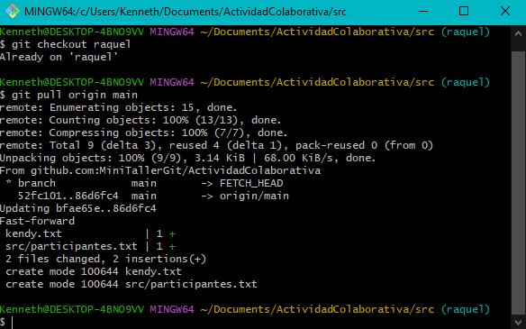
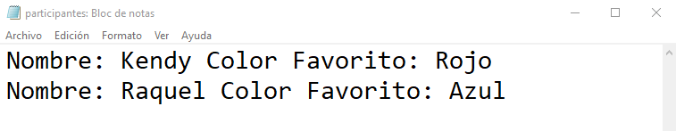
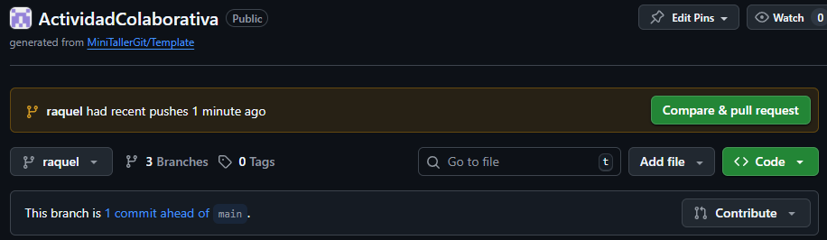
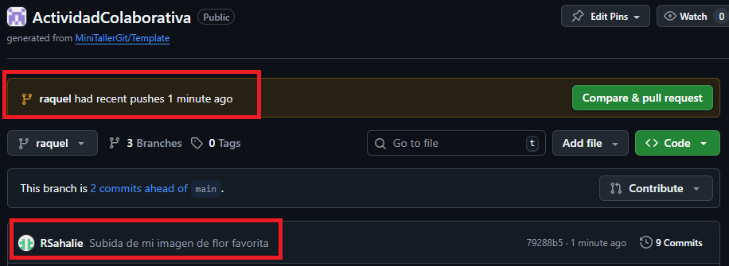
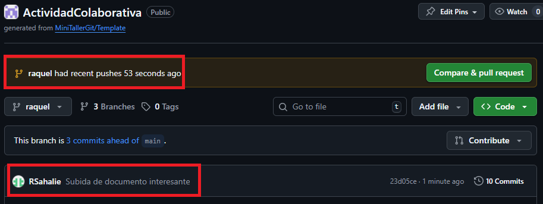
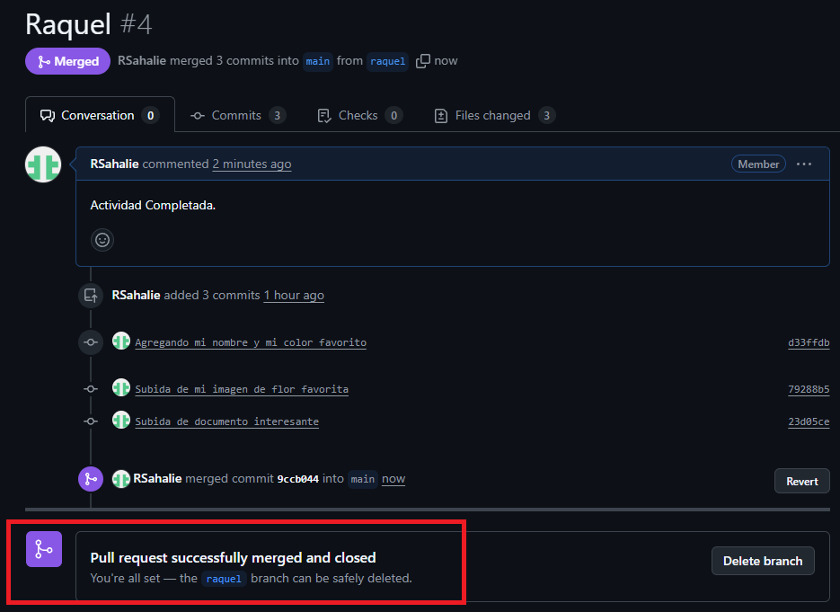
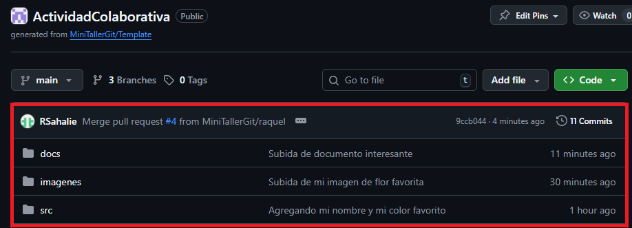

Antes de empezar, asegúrate de tener los últimos cambios de main en tu rama:
git checkout tu-rama
git pull origin mainEsto evita conflictos y te asegura trabajar con la versión más reciente de todos los archivos.
Ejemplo de terminal mostrando pull exitoso:
Agrega tu nombre y color favorito en src/participantes.txt sin borrar lo que otros hayan agregado:
src:
cd srcparticipantes.txt en un editor:
nano participantes.txt # Linux/WSL
notepad participantes.txt # WindowsNombre: TuNombre | Color favorito: TuColorNo borres las líneas de otros participantes.
git add src/participantes.txt
git commit -m "Agregado mi nombre y color favorito"
git push origin <tu-rama>Ejemplo en GitHub:
images (flor o planta)cd ..imagenes:
cd imagesimages de tu repositorio.TuNombre_flor.pngimagenes.git add TuNombre_flor.pnggit commit -m "Subida de mi imagen de flor favorita"git push origin tu-rama(nombre)Ejemplo en GitHub:
docscd ..docs:
cd docsdocs.noticia_tecnologia_Kendy.pdfgit add Huracanes_Kendy.pdfgit commit -m "Subida de documento interesante"git push origin tu_ramaEjemplo en GitHub:
Cuando termines las tres actividades y tengas todo commit/pusheado en tu rama, crea un Pull Request para fusionarla con main:
Ejemplo de Pull Request Cerrado en GitHub:
Finalmente, los cambios se ven en el Repositorio Colaborativo, concluyendo así las actividades del Mini Taller de Git:
main (git pull)participantes.txt y hacer commit/pushimagenes y hacer commit/pushdocs y hacer commit/pushmain